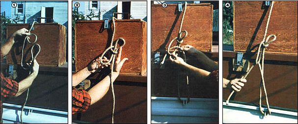

Photos by the Author
Pass a ""horseshoe bend"" up through an in-line loop (that's been formed with the rope's bitter end on top) . . . as shown in Photos 1 and 2. Then run the free rope end around your mooring (Photo 3), ""tighten 'er down"" (Photo 4), and finish off the knot with half hitches